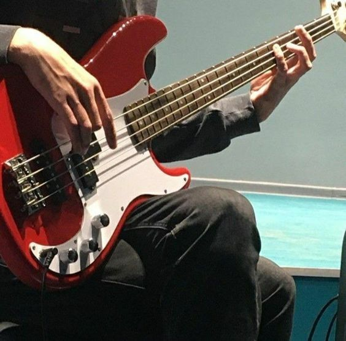

Full-Name:
Paul John C. Bullangay
Permanent Address:
Duhat Compound Annex 31 Severina 18 Marcelo Green Village Parañaque City
Place of Birth:
Parañaque City
Height:
158 cm
Nickname:
Janjan
Contact Number:
09186557029
Year Birth:
2003
Age:
21
Present Address:
Duhat Compound Annex 31 Severina 18 Marcelo Green Village Parañaque City
Mobile Number:
09186557029
Weight:
80
About Me
Dedicated and passionate individual. Detail-oriented and enjoys challenges that allow for learning and growth. Working on finding a balance between striving for excellence and being satisfied with efforts.


Enjoys sleeping, watching animes and kdramas, and playing games in free time. Skilled in playing the bass guitar and adept at playing various video games.
Greatest strength is adaptability. Able to quickly adjust to new situations and environments, thriving in diverse settings and tackling challenges with confidence.
Enjoys staying active through activities such as basketball, cycling, and going to the gym, maintaining a healthy life balance.